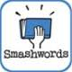

From the journal
The Eleven Best Indie Books of 2013 -- Scott Spotson's Reviews
Here are the indie books that I gave five stars in 2013: great books!
The Little Witch by Lucas Ege Mautner
Exceptional Merit by George P. Norris http://www.amazon.com/Exceptional-Merit-George-Norris-ebook/dp/B00DS0TD0C
Amid the Ashes and the Dust by Clay Mitchell http://www.amazon.com/Amid-Ashes-Dust-Clay-Mitchell-ebook/dp/B00D4NRWHO
Hildof and the Seven Given Souls by Abraham Mehmet http://www.amazon.com/Hildof-Seven-Given-Souls-Book-ebook/dp/B00FE7I5HO
The Doom Murders by Brian O'Hare http://www.amazon.com/The-Doom-Murders-Brian-OHare-ebook/dp/B00AL4LI24
Bait (Order of the Spirit Realm) by K.C. Blake http://www.amazon.com/Bait-Order-Spirit-Realm-Blake-ebook/dp/B00CJ182E4
Now & Again by E.A. Fournier http://www.amazon.com/Now-Again-E-A-Fournier-ebook/dp/B00B1Y2HBY
Linked Through Time by Jessica Tornese http://www.amazon.com/Linked-Through-Time-Jessica-Tornese/dp/1477570799
Lost Through Time by Jessica Tornese http://www.amazon.com/Lost-Through-Linked-Jessica-Tornese-ebook/dp/B00I0FF9QW
Therapy for Ghosts by Eric Praschan http://www.amazon.com/Therapy-Ghosts-James-Women-Trilogy-ebook/dp/B009DTXGVO
Brain: The Man Who Wrote the Book That Changed the World by Dermot Davis http://www.amazon.com/Brain-Wrote-Book-Changed-World-ebook/dp/B00DF3ZFJA
Enjoy all of these books!
The Little Witch by Lucas Ege Mautner
Exceptional Merit by George P. Norris http://www.amazon.com/Exceptional-Merit-George-Norris-ebook/dp/B00DS0TD0C
Amid the Ashes and the Dust by Clay Mitchell http://www.amazon.com/Amid-Ashes-Dust-Clay-Mitchell-ebook/dp/B00D4NRWHO
Hildof and the Seven Given Souls by Abraham Mehmet http://www.amazon.com/Hildof-Seven-Given-Souls-Book-ebook/dp/B00FE7I5HO
The Doom Murders by Brian O'Hare http://www.amazon.com/The-Doom-Murders-Brian-OHare-ebook/dp/B00AL4LI24
Bait (Order of the Spirit Realm) by K.C. Blake http://www.amazon.com/Bait-Order-Spirit-Realm-Blake-ebook/dp/B00CJ182E4
Now & Again by E.A. Fournier http://www.amazon.com/Now-Again-E-A-Fournier-ebook/dp/B00B1Y2HBY
Linked Through Time by Jessica Tornese http://www.amazon.com/Linked-Through-Time-Jessica-Tornese/dp/1477570799
Lost Through Time by Jessica Tornese http://www.amazon.com/Lost-Through-Linked-Jessica-Tornese-ebook/dp/B00I0FF9QW
Therapy for Ghosts by Eric Praschan http://www.amazon.com/Therapy-Ghosts-James-Women-Trilogy-ebook/dp/B009DTXGVO
Brain: The Man Who Wrote the Book That Changed the World by Dermot Davis http://www.amazon.com/Brain-Wrote-Book-Changed-World-ebook/dp/B00DF3ZFJA
Enjoy all of these books!

